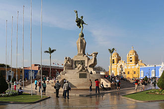

<section class="py-20 bg-white border-t-4 border-[#ef7a71]">
    <div class="grid grid-cols-6 gap-6 max-w-4xl mx-auto text-center items-center">
        <div class="col-span-3">
            <h3 align="center" class="text-3xl font-bold mb-10">Origen de Dulcet </h3>
            
                <div align="center">
                    <blockquote class="italic">Dulcet nació en Trujillo, en el año 2020, en una época de cambios e
                        incertidumbre,
                        en un momento en que el mundo se detuvo, encontramos en la repostería una forma de reconectar
                        con lo
                        esencial: el hogar, la familia y el amor por los pequeños detalles. Lo que empezó como una
                        manera de
                        compartir postres caseros con los más cercanos, poco a poco se transformó en un emprendimiento
                        lleno
                        de
                        ilusión. Así surgió Dulcet, con el propósito de llevar un poco de dulzura, alegría y consuelo a
                        través de
                        cada creación. Hoy seguimos con ese mismo espíritu: hacer de cada postre un abrazo, y de cada
                        cliente, parte
                        de esta historia.</blockquote>
                </div>
        </div>
        <div class="col-span-3 px-6">
            
        </div>
    </div>
</section>